🔴🟢🔺 1.0x 瞄具全家福（10 款）
📸 游戏内军械库 1.0x 瞄具总览

布局说明：3 列 × 4 行卡片网格，10 款按顺序混排（并非每行一个家族）。第 1 行：红点 A / B / C；第 2 行：全息 A / B / C；第 3 行：全息 D / 反射 A / 反射 B（截图时处于选中态，故为橙色高亮）；第 4 行：反射 C。点击图片可看大图。
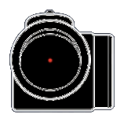
Red Dot A · 红点 NATO游戏内：红点瞄准器 A
方形外壳 + 圆点准星。北约系干员的默认红点，最常见外观。
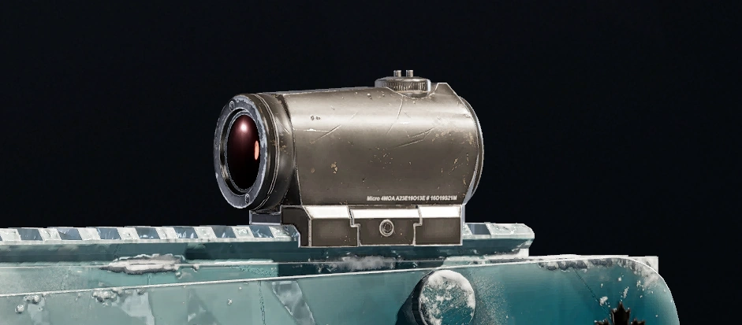
↑ Fandom 渲染图（辅证）
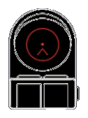
Red Dot B · 红点 Russian游戏内：红点瞄准器 B
宽镜体 + T 字准星。俄系/斯派兹纳兹风格。
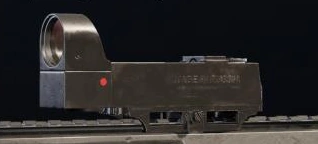
↑ Fandom 渲染图（辅证）
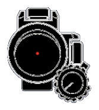
Red Dot C · 红点 M4S Y5S3游戏内：红点瞄准器 C
抬高型 + 圆点准星，镜身右下带调节旋钮。Y5S3 引入，镜身更高。
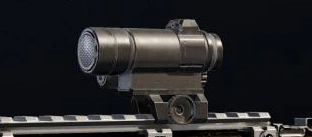
↑ Fandom 渲染图（辅证）
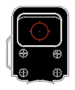
Holographic A · 全息 NATO游戏内：全息瞄准器 A
EOTech 风格方框 + 圆环内带点准星。
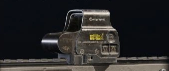
↑ Fandom 渲染图（辅证）
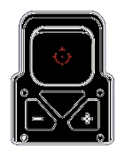
Holographic B · 全息 Russian游戏内：全息瞄准器 B
机身带 +/− 调节键 + 圆环十字准星。俄系风格。
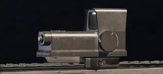
↑ Fandom 渲染图（辅证）
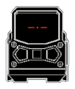
Holographic C · 全息 Razor游戏内：全息瞄准器 C
紧凑低矮宽体，准星为横向短划。镜身比 NATO/Russian 明显更扁。
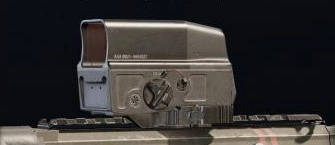
↑ Fandom 渲染图（辅证）
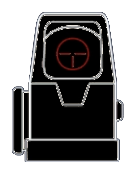
Holographic D · 全息 MH1 Y5S3游戏内：全息瞄准器 D
极简窄框，准星收束得非常小。Y5S3 引入。
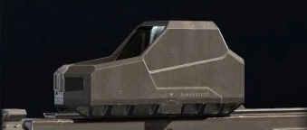
↑ Fandom 渲染图（辅证）
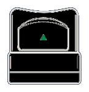
Reflex A · 反射 NATO游戏内：反射式瞄准器 A
塑料外壳 + 绿色倒三角准星。常见反射镜。
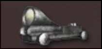
↑ Fandom 渲染图（辅证）
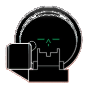
Reflex B · 反射 Russian游戏内：反射式瞄准器 B
圆形金属镜体，镜身最厚重，绿色准星带横向标线。
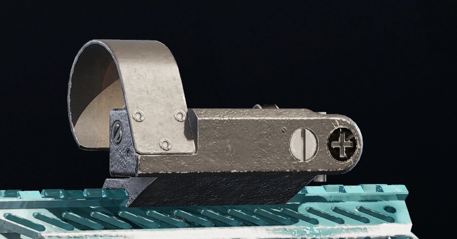
↑ Fandom 渲染图（辅证）
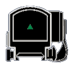
Reflex C · 反射 Vintage游戏内：反射式瞄准器 C
复古低矮款 + 绿色倒三角准星。镜身最扁平，右侧带线缆造型。
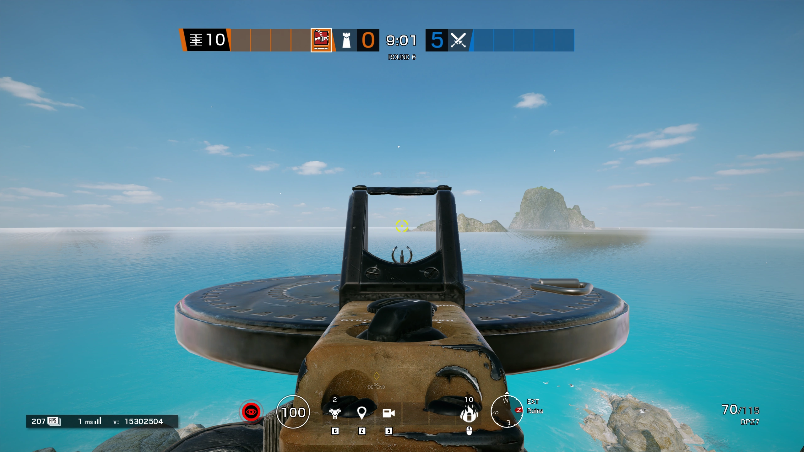
↑ Fandom 渲染图（辅证）